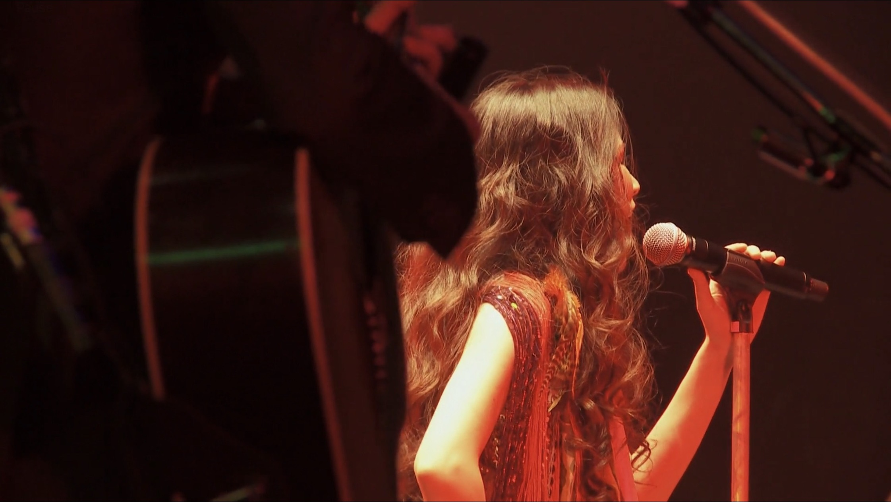
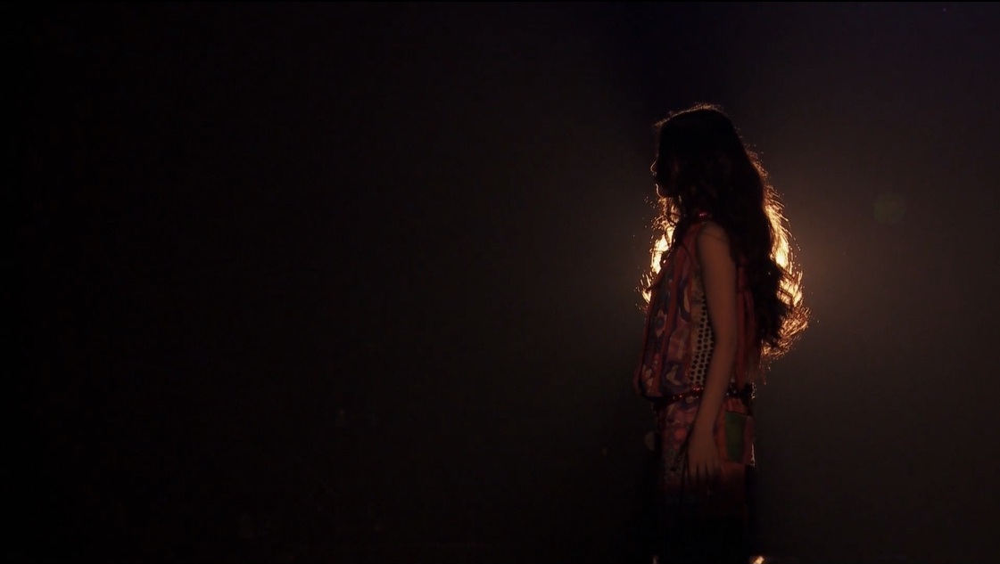
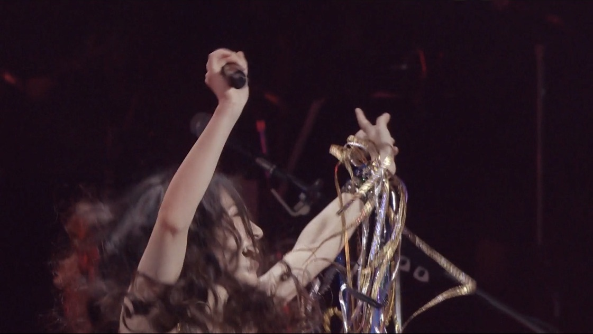
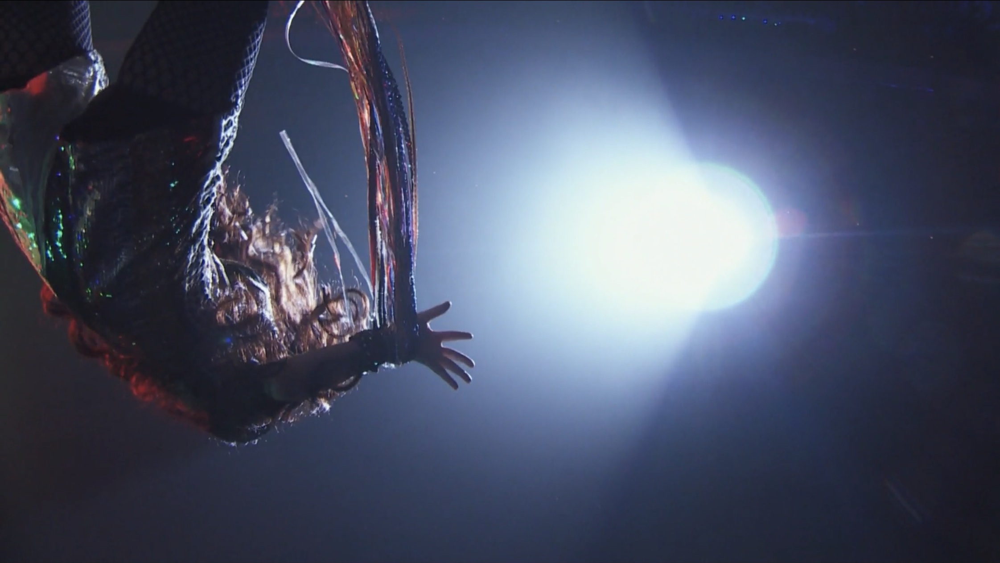

Day 39

Superfly ◆ Dancing at Budokan!! ◆ 2009
终于有个摇滚推荐了，感动不感动ww
Superfly 的主唱是越智志帆，唱功了得。（其实就她一人，多保孝一刚组团没多久就跑路了。）越智志帆本身也喜欢经典摇滚，所以她的歌我也喜欢。链接的是东京武道馆的演唱会。大姐蹦蹦跳跳又很酷，台风超棒。后面和声小姐巨开心地跟着跳来跳去也很可爱。DVD 里还包括一个小影片，讲她去美国和 Big Brother and Holding Company 一起，在 Woodstock 四十周年演唱会上唱 Janis Joplin 的歌。Janis Joplin 据她说是她的第一偶像，姐姐好眼光。这姐姐喜欢一首歌唱完紧跟一句 “thank you!!”，超酷。（那个四十周年演唱会好惨，下面稀稀拉拉一堆老头老太太，唉）
之前好像喉咙有恙休息了一段时间，休息完就剪了短发，看她后面的演出感觉没有以前活力四射了。希望她能修养身体，恢复精力。
唯一想吐槽的地方是她的专辑封面都不咋样，Warner Music 该打。
演唱会结束的时候很难过，像是《红猪》结尾的时候那样，感觉过去两小时我们身处的那个美好世界离去了。







